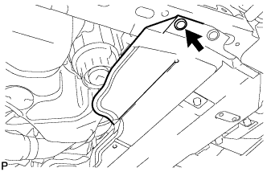
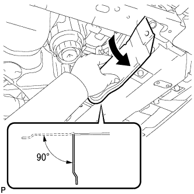
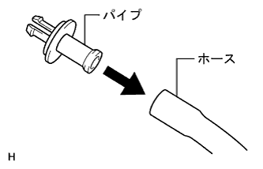
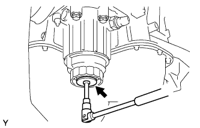
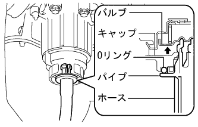
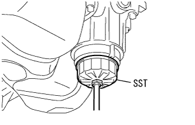
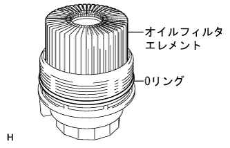

Oil Filter Element (2GR-FE) Removal |
| 1. Drain Engine Oil |
Remove the drain plug and drain the engine oil.
After draining the oil, install the drain plug with a new gasket.
| 2. Remove Oil Filter Element Service Hole Cover |
 |
Remove the clip.
 |
As shown in the illustration, crease the service hole cover and open it.
| 3. Remove Oil Filter Element |
 |
Connect a hose (15 φ) to the supplied pipe.
 |
Remove the oil filter drain plug from the oil filter cap.
 |
Insert the pipe with the hose attached into the oil filter cap.
 |
Check that the oil has drained, and remove the pipe and O-ring (for drain plug).
 |
Using SST, remove the oil filter cap.
 |
Remove the oil filter element and O-ring (for cap) from the oil filter cap.